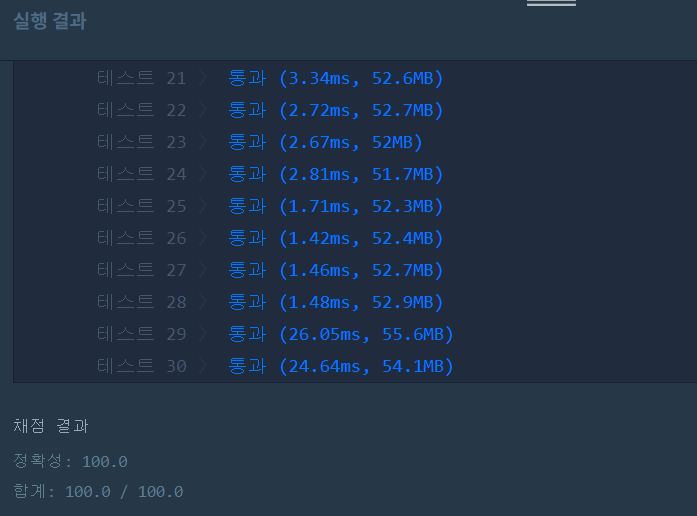

👀 문제
https://programmers.co.kr/learn/courses/30/lessons/17683
👊 도전
1. 설계
- i번째 음악의 재생시간을 계산한다.
- 라디오에서 플레이할 수 있는 시간이 음악길이보다 더 짧다면 라디오 길이만큼만 cut한다.
- 아니라면(음악이 반복될 수 있다면) 그만큼 계산한다.
- 완성된 노래에 m이 존재한다면 list에 Node(음악이름, 재생시간) 형태로 넣는다.
- list에 값이 하나 이상 존재한다면 재생시간기준 내림차순 정렬한다.
- 맨 첫 번째 값이 정답이다.
2. 구현
1
2
3
4
5
6
7
8
9
10
11
12
13
14
15
16
17
18
19
20
21
22
23
24
25
26
27
28
29
30
31
32
33
34
35
36
37
38
39
40
41
42
43
44
45
46
47
48
49
50
51
52
53
54
55
56
57
58
59
60
61
62
63
64
65
66
67
68
69
70
71
72
73
import java.util.*;
/**
*
* @author HEESOO
*
*/
import java.util.*;
class Solution {
public String solution(String m, String[] musicinfos) {
String answer = "(None)";
ArrayList<Node> list=new ArrayList<>(); // 조건 만족하는 값들 모두 저장
m=removeSharp(m); // # 제거
for(String music:musicinfos){
String[] array=music.split(",");
int time=getTime(array[0], array[1]); // 음악시간 가져오기
String info=removeSharp(array[3]); // # 제거
// 재생 가능 시간이 음악보다 짧다면
if(time<=info.length()) info=info.substring(0, time);
else{ // 음악이 replay될 수 있다면
int c=time/info.length(); // 몇번 반복 가능한지 저장
StringBuilder sb=new StringBuilder(info);
for(int j=0;j<c;j++) sb.append(info); // c번 반복
sb.append(info.substring(0, time%info.length())); // c반복하고 나머지도 저장
info=sb.toString();
}
// 멜로디가 존재한다면 list에 add
if(info.contains(m)) list.add(new Node(array[2], time));
}
// 방금그곡을 찾았으면
if(list.size()>=1){
Collections.sort(list, new Comparator<Node>(){ // 음악시간 기준 내림차순 정렬
@Override
public int compare(Node n1, Node n2){
if(n1.time>n2.time) return -1;
else if(n1.time==n2.time) return 0;
else return 1;
}
});
answer=list.get(0).name; // 첫번째가 정답
}
return answer;
}
public String removeSharp(String s){ // C#->c로 변환
String[] before={"C#", "D#", "F#", "G#", "A#"};
String[] after={"c", "d", "f", "g", "a"};
for(int i=0;i<5;i++){
s=s.replaceAll(before[i], after[i]);
}
return s;
}
public int getTime(String s, String e){ // 플레이 시간 리턴
String[] ss=s.split(":");
String[] ee=e.split(":");
int sTime=Integer.parseInt(ss[0])*60+Integer.parseInt(ss[1]);
int eTime=Integer.parseInt(ee[0])*60+Integer.parseInt(ee[1]);
return eTime-sTime;
}
}
class Node{
String name;
int time;
public Node(String n, int t){
this.name=n;
this.time=t;
}
}
3. 결과

🤟 성공 🤟
시간 계산에서 분 단위로 바꿔서 계산하지 않고 바로 hhmm형태로 뺐더니 테스트케이스 27, 30에서 실패했다. 예를 들어, 12:59, 13:00이면 1을 리턴해야하는데 나의 경우 41을 리턴했기 때문이다.
그리고 (None)에 `도 없어야 한다.
4. 설명
- m에서 #을 제거한다
- 문자 하나당 1분이 걸린다고 계산하기 위해서는 C#같이 두자리 문자도 하나로 변환해야 한다.
- C#->c로 변환해주자.
- removeSharp()에서 이 역할을 수행하고 변환된 문자열을 리턴한다.
- #이 붙는 경우가 정해져있으므로 before 배열에 넣고, 인덱스를 맞춰서 after에 소문자로 변환할 값을 넣는다.
- for문으로 s에서 before[i]가 존재한다면, replaceAll()로 after[i]로 바꾼다.
- m에서 #을 제거한다
- musicinfos에서 음악 정보는 문자열 하나로 이루어져있고, 그 안에서 ‘,’로 구분되므로 split()로 나눈다.
- getTime()을 이용해 음악의 재생시간을 time에 저장한다.
- getTime() 역시 :로 구분되므로 split()한 후, 분 형태로 계산하고 리턴한다.
- 악보(array[3])도 removeSharp()로 #을 제거한다.
- 라디오에서 플레이할 수 있는 시간(info)가 악보(time)보다 더 짧다면 info에 맞춰서 자르고 info에 저장한다.
- 반복이 가능하다면 그만큼 반복해서 info에 저장해야한다.
- 문자열의 삽입이 여러 번 이루어지므로 immutable한 String 클래스에서 작업을 수행하는 것보다 StringBuilder가 낫다.
- 반복 횟수는 time/info.length()이고, 반복하고 남은 것은 나머지 연산으로 더해준다.
- 라디오에서 플레이할 음 info에 m이 존재한다면 list에 넣는다.
- list를 sort해서 정답을 리턴한다
- 위 조건을 만족하는 노래가 하나 이상이라면, comparator로 정렬해야 한다.
- 정렬 기준은 time이 큰 것이 앞으로 가도록 한다.
- time이 같을 수도 있다. 이때는 먼저 들어온 값이 우선순위를 가진다. return 0하면 자리 변화가 일어나지 않기 때문에 들어온 순서대로 놓이게 되므로 문제 없다.
- answer는 맨 첫번째 값이 된다.
- list에 값이 없다면 당연히 정렬도 하지 않고, 바로 answer의 초기값인 (None)을 리턴한다.